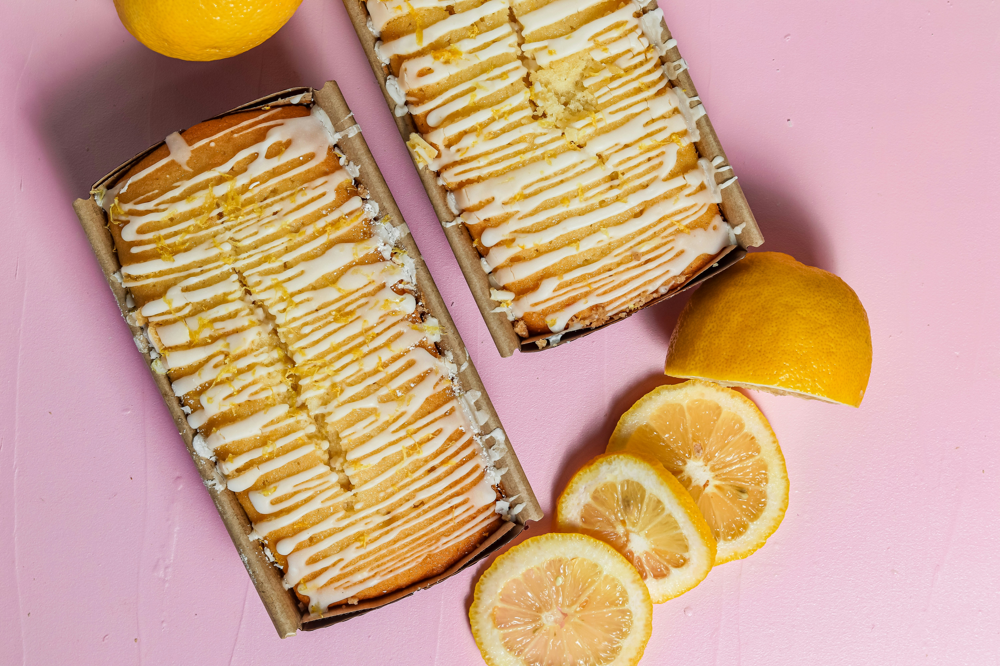
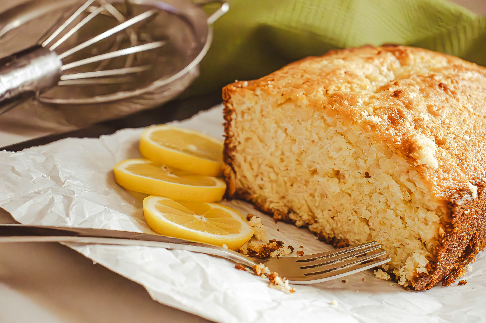
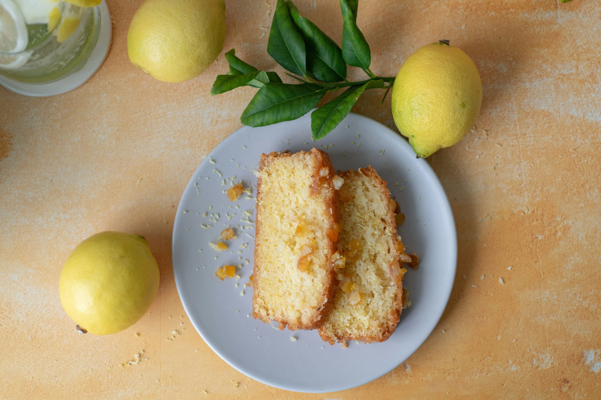

Bella's Bakery
Homemade Lemon Cake
Baked with love.
Soft and fluffy lemon cake is full of
fresh citrus flavor.
Ingredients
Everything you need.
- 200g unsalted butter, softened
- 200g caster sugar
- 3 large eggs
- 200g all-purpose flour
- 1 tsp lemon juice, and vanilla.
How to Make It
- Preheat your oven to 180°C.
- Beat the butter and sugar together.
- Add the eggs.
- Stir in lemon juice, and vanilla.
- Pour the mixture into the cake tin.
- Bake for 35–45 minutes.
Serving Suggestions

